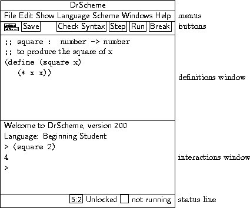
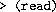
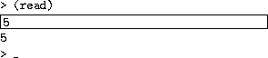
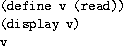
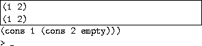
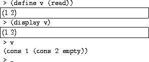

The DrScheme window has three parts: a row of buttons at the top, two editing panels in the middle, and a status line at the bottom.
|  |
The top editing panel, called the definitions window, is for
defining Scheme programs. The above figure shows a program that defines
the function square.
The bottom panel, called the interactions window, is for evaluating Scheme expressions interactively. The Language line in the interactions window indicates which primitives are available in the definitions and interactions windows. In the above figure, the language is Beginning Student, which is the default language.
Clicking the Run button evaluates the program in the
definitions window, making the program's definitions available in the
interactions window. Given the definition of square as in the
figure above, typing (square in the interactions window
produces the result 2)4.
The status line at the bottom of DrScheme's window provides information about the current line and position of the editing caret, whether the current file can be modified, and whether DrScheme is currently evaluating any expression. The recycling icon flashes while DrScheme is ``recycling'' internal resources, such as memory.
The left end of the row of buttons in DrScheme contains a miniature button with the current file's name. Clicking the button opens a menu that shows the file's full pathname. Selecting one of the menu entries opens file starting in the corresponding directory.
Below the filename button is a (define ...) button for a popup menu of names defined in the definitions window. Selecting an item from the menu moves the blinking caret to the corresponding definition.
The Save button appears whenever the definitions window is modified. Clicking the button saves the contents of the definitions window to a file. The current name of the file appears to the left of the Save button, but a file-selection dialog appears if the file has never been saved before.
The Step button starts The Stepper, which shows the evaluation of a
program as a series of small steps. Each evaluation step replaces an
expression in the program with an equivalent one using the evaluation
rules of DrScheme. For example, a step might replace (+
with 1 2)3. These are the same rules used by DrScheme to evaluate a
program. Clicking Step opens a new window that contains the
program from the definitions window, plus three new buttons:
Next, Previous, and Home. Clicking Next
performs a single evaluation step, clicking Previous retraces a
single step, and clicking Home returns to the initial program.
The Stepper works only for programs using the Beginning Student language level.
Clicking the Check Syntax button annotates the program text in the definitions window. It add these annotations:
Syntactic Highlighting Imported variables and locally defined variables are highlighted with color changes.
Lexical Structure The lexical structure is shown with arrows overlaid on the program text. When the mouse cursor passes over a variable, DrScheme draws an arrow from the binding location to the variable, or from the binding location to every bound occurrance of the variable.
Additionally, control or right-button mouse clicking on a variable activates a popup menu that lets you jump from binding location to bound location and vice versa, alpha-rename the variable, or tack the arrows so they do not disappear.
Tail Calls Any subexpression that is (syntactically) in tail-position with respsect to its enclosing context is annotated by drawing a light purple arrow from the tail expression to its surrounding expression.
Require Annotations Control-clicking or
right-button clicking (depending on the platform DrScheme
runs on) on the argument to require activates a
popup menu that lets you open the file that contains the
required module.
Passing the mouse cursor over a require expression
inside a module shows all of the variables that are used
from that require expression. Additionally,
if no variables are used from that require expression,
it is colored like an unbound variable.
Also, passing the mouse cursor over a variable that is imported from a module shows the module that it is imported from in a status line at the bottom of the frame.
The Run button evaluates the program in the definitions window and resets the interactions window.
The Break button interrupts an evaluation, or beeps if DrScheme is not evaluating anything. For example, after clicking Run or entering an expression into the interactions window, click Break to cancel the evaluation. Click the Break button once to try to interrupt the evaluation gracefully; click the button twice to killing the evaluation immediately.
DrScheme's editor provides special support for managing parentheses in a program. When the blinking caret is next to a parenthesis, DrScheme shades the region between the parenthesis and its matching parenthesis. This feature is especially helpful when for balancing parentheses to complete an expression. Furthermore, if you type a closing parenthesis ``)'' that should match an opening square bracket ``['', the editor automatically converts the ``)'' into a ``]''. DrScheme beeps whenever a closing parenthesis does not match an opening parenthesis.
Although whitespace is not significant in Scheme, DrScheme encourages a particular format for Scheme code. When you type Enter or Return, the editor inserts a new line and automatically indents it. To make DrScheme re-indent an existing line, move the flashing caret to the line and hit the Tab key. (The caret can be anywhere in the line.) You can re-indent an entire region by selecting the region and typing Tab.
The interactions window lets you type an expression after the > prompt for immediate evaluation. You cannot modify any text before the last > prompt. To enter an expression, the flashing caret must appear after the last prompt, and also after the space following the prompt.
When you type a complete expression and hit Enter or Return, DrScheme evaluates the expression and prints the result. After printing the result, DrScheme creates a new prompt for another expression. Some expressions return a special ``void'' value; DrScheme never prints void, but instead produces a new prompt immediately.
If the expression following the current prompt is incomplete, then DrScheme will not try to evaluate it. In that case, hitting Enter or Return produces a new, auto-indented line. You can force DrScheme to evaluate the expression by typing alt-return or command-return (depending on your platform).
To copy the previous expression to the current prompt, type ESC-p (i.e., type Escape and then type p). Type ESC-p multiple times to cycle back through old expressions. Type ESC-n to cycle forward through old expressions.
Clicking the Run button evaluates the program in the definitions window and makes the program's definitions available in the interactions window. Clicking Run also resets the interactions window, erasing all old interactions and removing old definitions from the interaction environment. Although Run erases old > prompts, ESC-p and ESC-n can still retrieve old expressions.
Whenever DrScheme encounters an error while evaluating an expression, it prints an error message in the interactions window and highlights the expression that triggered the error. The highlighted expression might be in the definitions window, or it might be after an old prompt in the interactions window.
For certain kinds of errors, DrScheme turns a portion of the error message into a hyperlink. Click the hyperlink to get help regarding a function or keyword related to the error.
DrScheme supports multiple dialects of Scheme. The name of the current evaluation language always appears in in the top of the interactions window. To choose a different language, select the Language|Choose Language... menu item. After changing the language, click Run to reset the language in the interactions window.
Five of DrScheme's languages are specifically designed for teaching:
Beginning Student is a small version of Scheme that is tailored for beginning computer science students.
Beginning Student with List Abbreviations is an
extension to Beginning Student that prints lists with
list instead of cons, and accepts quasiquoted
input.
Intermediate Student adds local bindings and higher-order functions.
Intermediate Student with Lambda adds anonymous functions.
Advanced Student adds mutable state.
The teaching languages different from conventional Scheme in a number of ways, described below.
DrScheme also supports several languages for experienced programmers:
Standard (R5RS) contains those primitives and syntax defined in the R5RS Scheme standard. See the Revised5 Report on the Algorithmic Language Scheme for details.
PLT Textual (MzScheme) extends R5RS with exceptions, threads, objects, modules, components, regular expressions, TCP support, filesystem utilities, and process control operations. See PLT MzScheme: Language Manual for details.
PLT Graphical (MrEd) extends MzScheme with a graphical toolbox for creating GUI applications (with special support for editor applications, hence the Ed in MrEd). See also PLT MrEd: Graphical Toolbox Manual.
PLT Pretty Big extends MrEd with the forms of the Advanced Student teaching language, and more.1 It is useful as a step past Advanced Student, or for implementing MrEd programs with a richer base syntax and set of primitives.
Note that there some forms (for example,
define-struct) that appear in both Advanced and
MrEd, but with slightly different semantics. In all such
cases, the PLT Pretty Big language uses the forms from
the MrEd language (In the case of define-struct, Advanced
implicitly uses a very permissive inspector (see
inspectors for details) and MrEd uses the
current inspector).
module requires that the definitions window contain only a single module declaration, as defined in PLT MzScheme: Language Manual. The module explicitly declares the language for the module's body.
The Language|Choose Language... dialog contains a Show Details button for configuring certain details of the language specification. (Each option corresponds to one of the lines in the language table, but only a few of the lines in the figure have an option in the dialog.) Whenever the selected options do not match the default language specification, a Custom indicator appears next to the language-selection control at the top of the dialog.
The teaching languages differ from conventional Scheme in a number of ways:
Case-sensitive identifiers and symbols -- In a
case-sensitive language, the variable names x and
X are distinct, and the symbols 'x and
'X are also distinct. In a case-insensitive language,
x and X are equivalent and 'x and
'X represent the same value. The teaching languages
are case-sensitive by default, and other languages are usually
case-insensitive. Case-sensitivity can be adjusted through the
detail section of the language-selection dialog.
All numbers are exact unless #i is
specified -- In the Beginning Student through Intermediate
Student with Lambda languages, numbers containing a decimal point are
interpreted as exact numbers. This interpretation allows
students to use familar decimal notation without inadvertently
triggering inexact arithmetic. Exact numbers with decimal
representations are also printed in decimal. Inexact inputs and
results are explicitly marked with #i.
Procedures must take at least one argument -- In the Beginning Student through Intermediate Student languages, defined procedures must consume at least one argument. Since the languages have no side-effects, zero-argument functions are not useful, and rejecting such function definitions helps detect confusing syntactic mistakes.
Identifier required at function call position -- In
the Beginning Student through Intermediate Student languages,
procedure calls must be of the form (. This restriction helps detect confusing misuses of
parentheses, such as identifier
...)( or 1)((+
, which is a common mistake among beginners
who are used to the optional parentheses of algebra.3 4))
Top-level required at function call position -- In
the Beginning Student languages, procedure calls must be of the
form (, and the number
of actual arguments must match the number of formal arguments
if top-level-identifier ...)top-level-identifier is defined. This
restriction helps detect confusing misuses of parentheses, such
as ( where x)x is a function
argument. DrScheme can detect such mistakes syntactically
because Beginning Student does not support higher-order
procedures.
Primitive and defined functions allowed only in
function call position -- In Beginning Student languages, the
name of a primitive operator or of a defined function can be
used only after the open-parenthesis of a function call (except
where teachpack extensions allow otherwise, as in the
convert-gui extension). Incorrect uses of primitives
trigger a syntax error. Incorrect uses of defined names trigger
a run-time error. DrScheme can detect such mistakes because
Beginning Student does not support higher-order procedures.
lambda allowed only in definitions -- In the Beginning Student through Intermediate Student languages, lambda (or case-lambda) may appear only in a definition, and only as the value of the defined variable.
Free variables are not allowed -- In the Beginning Student through Advanced Student languages, every variable referenced in the definitions window must be defined, pre-defined, or the name of a local function argument.
quote works only on symbols, quasiquote
diallowed -- In the Beginning Student language, quote
and ' can specify only symbols. This restriction avoids
the need to explain to beginners why 1 and
' are equivalent in standard Scheme. In addition,
1quasiquote, `, unquote, ,,
unquote-splicing, and ,@ are disallowed.
Unmatched cond/case is an error -- In
the Beginning Student through Advanced Student languages,
falling through a cond or case expression
without matching a clause signals a run-time error. This
convention helps detect syntactic and logical errors in
programs.
Conditional values must be true or
false -- In the Beginning Student through Advanced
Student languages, an expression whose value is treated as a
boolean must return an actual boolean, true or
false. This restriction, which applies to if,
cond, and, or, nand, and
nor expressions, helps detect errors where a boolean
function application is omitted.
+, *, and / take at least
two arguments -- In the Beginning Student through Advanced
Student languages, mathematical operators that are infix in
algebra notation require at least two arguments in
DrScheme. This restriction helps detect missing arguments to an
operator.
and, or, nand, and
nor require at least 2 expressions -- In the
Beginning Student through Advanced Student languages, the
boolean combination forms require at least two sub-expressions.
This restriction helps detect missing or ill-formed
sub-expressions in a Boolean expression.
set! disallowed on arguments -- In the
Advanced Student language, set! cannot be used to
mutate variables bound by lambda. This restriction
ensures that the substitution model of function application is
consistent with DrScheme's evaluation.
Improper lists disallowed -- A proper list
is either an empty list or a list created by consing
onto a proper list. In the Beginning Student through Advanced
Student languages, cons constructs only
proper lists, signaling an error if the second
argument is not a proper list. Since beginning students do not
need improper lists, this restriction help detect logical
errors in recursive functions.
Dot is diallowed -- In the Beginning Student through Advanced Student languages, a delimitted period is disallowed, (e.g., as an improper-list constructor in a quoted form, or for defining multi-arity procedures).
Keywords disallowed as variable names -- In the Beginning Student through Advanced Student languages, all syntactic form names are keywords that cannot be used as variable names.
Re-definitions are disallowed -- In the Beginning Student through Advanced Student languages, top-level names can never be re-defined.
Function definitions are allowed only in the definitions window -- In the Beginning Student languages, function definitions are not allowed in the interactions window.
The teaching languages also deviate from traditional Scheme in printing values. Different printing formats can be selected for any language through the detail section of language-selection dialog.
Constructor-style output -- See Constructor-style Output.
Quasiquote-style output -- See Quasiquote-style Output.
Rational number printing - In the teaching languages, all numbers that have a finite decimal expansion are printed in decimal form. For those numbers that do not have a finite decimal expansion (such as 4/3) DrScheme gives you a choice. It either prints them as mixed fractions or as repeating decimals, where the repeating portion of the decimal expansion is shown with an overbar. In addition, DrScheme only shows the first 25 digits of the number's decimal expansion. If there are more digits, the number appears with an ellipses at the end. Click the ellipses to see the next 25 digits of the expansion.
This setting only controls the initial display of a number. Right-clicking or control-clicking on the number lets you change from the fraction representation to the decimal representation.
write output -- Prints
values with write.
Show sharing in values -- Prints
interaction results using the shared syntax, which
exposes shared structure within a value. For example, the list
created by ( prints as
let ([lt (list 0)]) (list lt lt))
(
|
(list (list .
|
DrScheme's Create Executable... menu lets you create an executable for your program that you can start without first starting DrScheme. To create an executable, first save your program to a file and set the language and teachpacks. Click Run, just to make sure that the program is working as you expect. Beware, the executable you create will not have a read-eval-print-loop, so be sure to have an expression that starts your program running in the definitions window before creating the executable.
Once you are satisfied with your program, choose the Create Executable... menu item from the Scheme menu. Choose a place to save the executable. You will be able to start the saved executable in the same way that you start any other program on your computer.
An executable created by Create Executable... is either a launcher executable or a stand-alone executable, and it uses either a graphical (MrEd) or textual (MzScheme) engine. For programs implemented with certain languages, Create Executable... will prompt you to choose the executable type and engine, while other languages support only one type or engine.
Each type has advantages and disadvantages:
A launcher executable tends to be small, and it uses the latest version of your program source file when it starts. It also accesses library files from your DrScheme installation when it runs. Since a launcher executable contains specific paths to access those files, launchers usually cannot be moved from one machine to another.
A stand-alone executable tends to be large, because it embeds a copy of your program at the time that it is created, as well as any library that your code uses. When the executable is started, it uses the embedded copies and does not need your original source file or your DrScheme installation. It may, however, require DLLs or framework libraries installed on your machine, depending on your operating system:
Windows -- The executable requires the following DLLs: libmzsch[vers].dll, libmzgc[vers].dll, and (for executables using the MrEd engine) libmred[vers].dll, where [vers] is based on the current version number. These DLLs are normally installed in the system directory.
Mac OS X -- The executable requires the PLT_MzScheme framework, which is normally installed in /Library/Frameworks. When using the MrEd engine, the executable also requires the PLT_MrEd framework from the same location.
To move the ``stand-alone'' executable to another machine, the DLLs or frameworks that it uses must also be copied to the other machine.
You can download these DLLs or frameworks as a separate package from
| http://www.plt-scheme.org/software/dynamic-libraries/ |
DrScheme may also ask you to choose a base executable. The choices are MrEd and MzScheme. MzScheme exectables are smaller, but have no graphical libraries. Also, under Mac OS X, executables created with MzScheme as the base can only be run from the commandline. Using the MrEd base executable means that your executable can also be launched from the finder.
TIP: Disable debugging in the language dialog before creating your launcher. With debugging enabled, you will see a stack trace with error messages, but your program will run more slowly. To disable debugging, open the language dialog, click the Show Details button, and click the No debugging or profiling check box, if it is available.
This section describes the different formats that DrScheme
uses for printing results in the interactions window. Each
of the different settings here also apply to the
printprint
DrScheme's constructor-style output treats cons,
vector, and similar primitives as value constructors, rather
than functions. It also treats list as shorthand for multiple
cons's ending with the empty list. Constructor-style printing
is valuable for beginning computer science students, because output
values look the same as input values.
Results printed in DrScheme's interactions window using
constructor-style printing look different than results printed in
traditional Scheme implementations, which use write to print
results. The table in Figure 1 shows the
differences between values printed in constructor style and values
printed with write.
| |
Figure 1: Comparison of constructor-style output to write | |
Constructor-style output is inconvenient for printing S-expression
results that represent programs. For example, the value '(lambda
(x) (lambda (y) (+ x y))) prints as
(
|
DrScheme's quasiquote-style output combines the
input-output invariance of constructor-style printing with the
S-expression readability of write. It uses quasiquote to
print lists, and uses unquote to escape back to constructor
style printing for non-lists and non-symbols.
With quasiquote-style printing, the above example prints as:
`(lambda (x) (lambda (y) (+ x y)))
|
This example:
(
|
`(lambda (x) ,(
|
Many Scheme programs avoid explicit input and output operations,
obtaining input via direct function calls in the interactions window,
and producing output by returning values. Other Scheme programs
explicitly print output for the user during evaluation using
write or display, or explicitly request input from the
user using read or read-char.
Explicit input and output appear in the interactions window, but within special boxes that separate explicit I/O from normal expressions and results. For example, evaluating

in the interactions window produces a special box for entering input:
(The underscore indicates the location of the flashing caret.) Type an
number into the box and hit Enter, and that number becomes the result
of the (read) expression. If you type 5, the overall
interaction appears as follows:

The mouse cursor becomes a watch whenever DrScheme is evaluating expression, but you can still use the mouse to move the selection in an input box.
Output goes to the same box as input. If you run the program

and provide the input S-expression (1 2), the interactions window
ultimately appears as follows:

In this example, display produces output immediately beneath the
input you typed, but the final result was printed outside the box
because it is the result of the program, rather than explicit
output. (The above example assumes constructor-style printing. With
traditional value printing, the final line outside the box would be
(1 2).)
Entering the same program line-by-line in the interactions window produces a different-looking result:

Although it is the same program as before, entering the program expression-by-expression demonstrates how each prompt creates its own I/O box.
DrScheme has special support for XML concrete syntax. The
Special menu's Insert XML Box menu inserts an
embedded editor into your program. In that embedded editor,
you type XML's concrete syntax. When a program containing an
XML box is evaluated, the XML box is translated into an
x-expression (or xexpr). Xexprs are s-expression
representation for XML expressions. Each xexpr is a list
whose first element is a symbol naming the tag, second
element is an association list representing attributes and
remaining elements are the nested XML expressions.
XML boxes have two modes for handling whitespace. In one mode, all whitespace is left intact in the resulting xexpr. In the other mode, any tag that only contains nested XML expressions and whitespace has the whitespace removed. You can toggle between these modes by right-clicking or control-clicking on the top portion of the XML box.
In addition to containing XML text, XML boxes can also contain Scheme boxes. Scheme boxes contain Scheme expressions. These expressions are evaluated and their contents are placed into the containing XML box's xexpr. There are two varieties of Scheme box: the standard Scheme box and the splicing Scheme box. The standard Scheme box inserts its value into the containing xexpr. The contents of the splice box must evaluate to a list and the elements of the list are ``flattened'' into the containing xexpr. Right-clicking or control-clicking on the top of a Scheme box opens a menu to toggle the box between a Scheme box and a Scheme splice box.
DrScheme also includes support for creating test cases as part of the program text. This support is designed as an aid for students building tests as part of the How to Design Programs design recipes.
Test cases in DrScheme are written in special boxes. To create one, choose Insert Test Case from the Scheme menu in the DrScheme window. The test cases consists of three editable areas. From the top, the first is a comment that names the test case. The second is an expression to test. The third is the expected result. Below the expected result is a light-blue box that will contain the actual result of the expression to be tested. Clicking on the triangle in the top-right hides the expression to test and the expected and actual results.
To run the test cases, simply click Run. The top-right corner of the test case will change to either be a check box or a red X, indicating success or failure of the test case.
To disable all of the test cases in the definitions window, choose the Disable All Test Cases menu item in the Scheme menu.
1 More precisely, Pretty Big is MrEd extended with the following MzLib libraries (see PLT MzLib: Libraries Manual): etc.ss, file.ss, list.ss, class.ss, unit.ss, unitsig.ss, include.ss, defmacro.ss, pretty.ss, string.ss, thread.ss, math.ss, match.ss, and shared.ss.